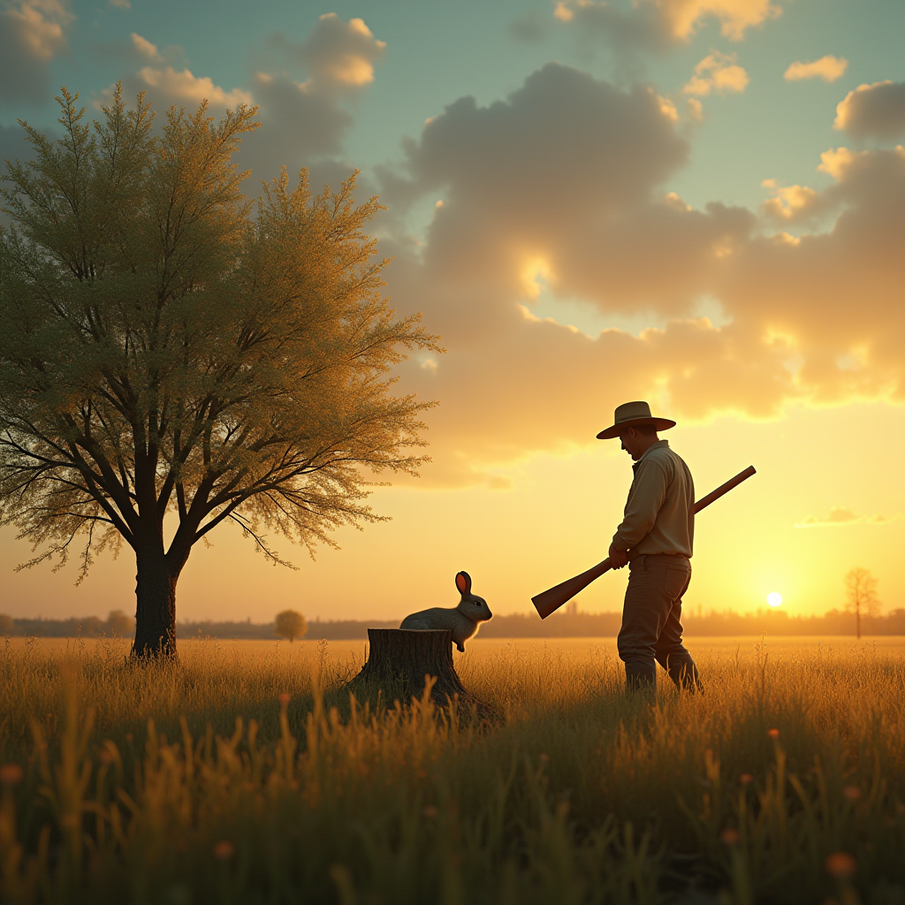
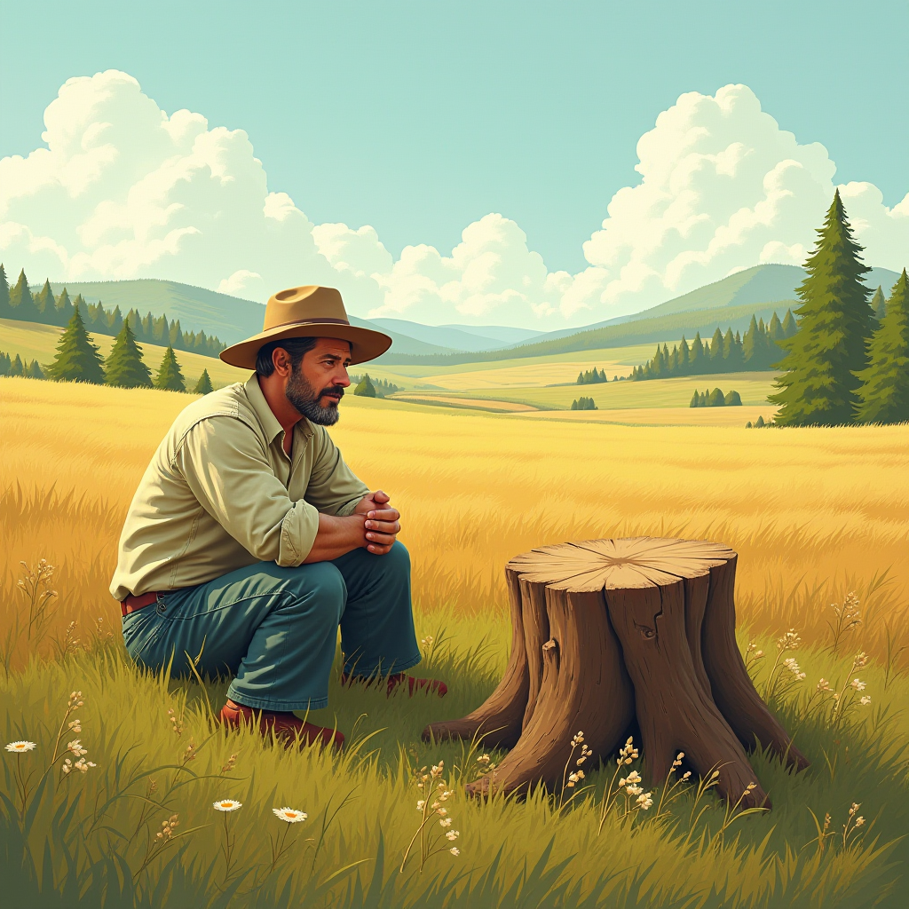
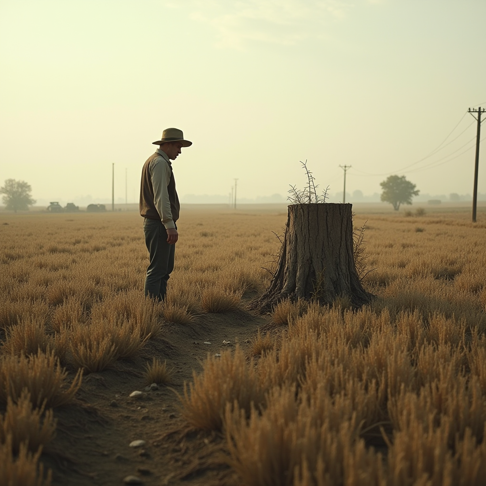

描述文本：在一片开阔的田野中，一位农夫正弯着腰辛勤地劳作。他穿着破旧的灰色短褂，手握锄头，满脸写满了汗水与专注。背景是一片青绿的农田，远处有连绵的山丘与蓝天白云，呈现出一幅宁静的乡村画面。

描述文本：傍晚的田野里，夕阳洒在一棵孤零零的老树旁。一只兔子惊慌失措地奔跑着，不小心撞上了树桩，倒在地上，四肢僵直。农夫站在不远处，惊讶地放下锄头，目光定格在那只撞晕的兔子身上。
描述文本：第二天清晨，农夫坐在树桩旁，双手抱膝，面带期待地盯着前方。他的锄头被扔在一旁，田里的杂草渐渐生长起来。远处的田野依然一片繁忙，其他农夫正在辛勤耕种，而他却固执地守着树桩，等待下一只兔子的出现。
描述文本：时间过去了许久，农夫的田地已经长满了杂草。树桩旁的农夫神情沮丧，饥肠辘辘，但依然不肯离开。他的身影显得孤独而落寞，周围的田地一片荒凉，兔子踪影全无，只剩风吹动杂草发出的沙沙声。
